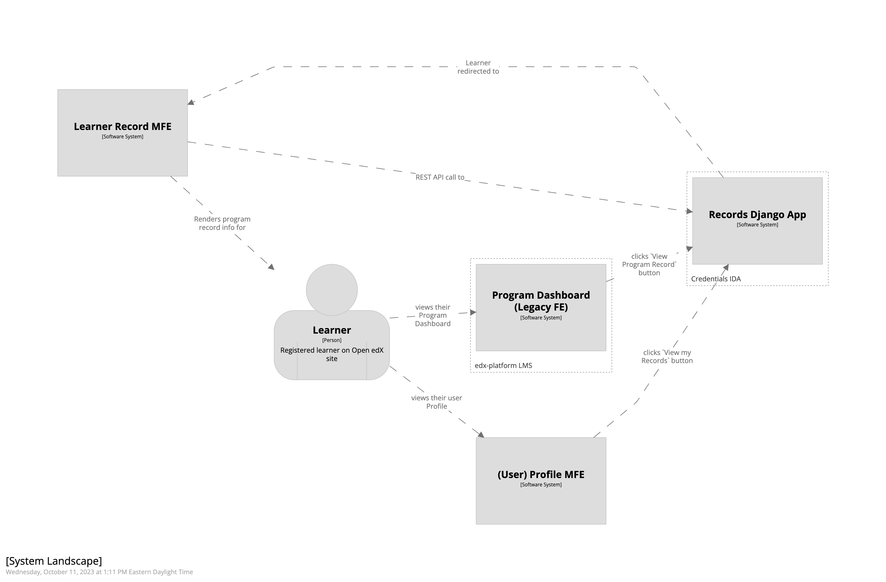
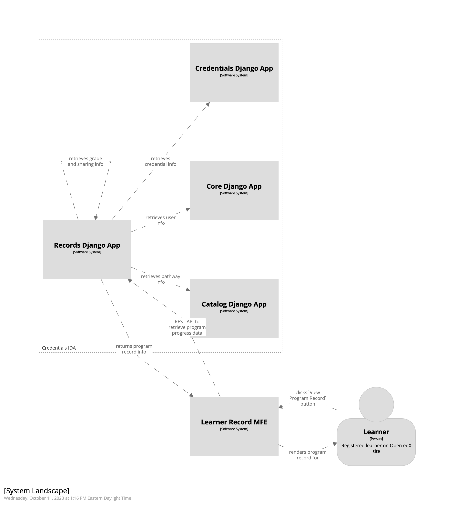

Learner Records#
The Credentials IDA keeps track of learners’ progress through their courses and programs. A learner can view and share
their achievements in a program, called a Program Record, through the Learner Record Microfrontend (MFE).
The Learner Record MFE must be configured and deployed independently from the Credentials IDA.
A learner must be logged in to view their program records, they can navigate to their program records from one of two places:
By clicking the
View My Recordsbutton from their LMS Profile page, ORBy clicking the
View Program Recordbutton from their LMS Program Dashboard page.
Initially, when a learner visits the Learner Record MFE, the learner will see a list of all programs they are enrolled in. If desired, a learner can then retrieve their certificate and grade data for each program they are enrolled in.
Below are a few high level diagrams showing how data is retrieved for rendering a learner’s program records.
Rendering a learner’s list of enrolled programs:
Rendering a learner’s program record:
Caveat: If a learner has earned a certificate that is not associated with a Program, it will not be shown as part of the learner’s Learner Record.
Configuration#
Syncing Catalog Data#
In order for Credentials (and thus the Learner Record MFE) to display program, course, and pathway information to learners, the system must ingest data from the Catalog (Course Discovery) IDA.
This catalog data is ingested through use of the Copy Catalog management command. This command must be run periodically to keep the catalog data fresh in the Credentials database.
Enabling Program Records#
Program Record support is enabled by default. Optionally, an Administrator may disable support for the program record
feature by disabling the Enable Learner Records checkbox in your site’s Site Configuration (via Django Admin).
Creation#
Program Records don’t have a concrete representation in the Credentials database.
The Credentials IDA receives certificate and grade data from the LMS as learners’ progress and complete their courses. When a learner accesses the records of a specific program, their certificate and grade data is retrieved from the Credentials IDA’s records and displayed.
Backpopulation#
If, for any reason, you need to backpopulate certificate or grade data in Credentials, you can run the Notify Credentials (LMS) management command.